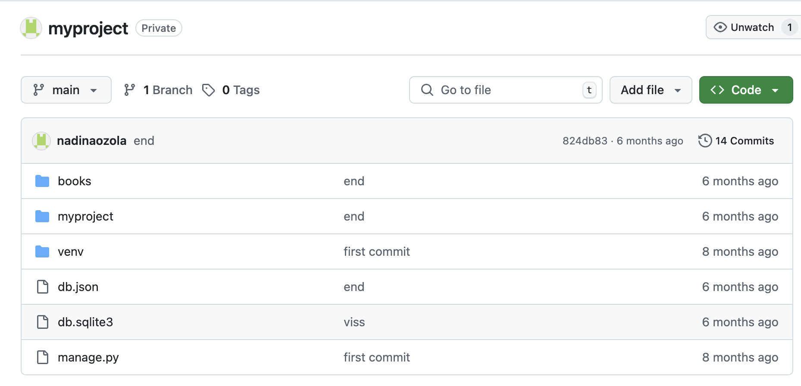

Git un versiju kontrole
Git ir būtisks rīks modernajā programmatūras izstrādē, un tā apguve studiju laikā LU bija nozīmīgs solis manā profesionālajā attīstībā. Git ļauj sekot līdzi izmaiņām kodā, saglabāt versijas un atgriezties pie iepriekšējiem stāvokļiem, ja nepieciešams. Esmu strādājusi ar Git komandlīniju un grafiskiem interfeisiem, piemēram, GitHub Desktop. Apguvu pull, push, commit, merge un branch darbības, kā arī sapratu to nozīmi sadarbības procesā. Izmantojot GitHub, es varēju sadarboties ar citiem studentiem, pārskatīt kodu un veikt "pull request". Projektos tas ļāva efektīvi organizēt darbu, izvairīties no konfliktiem un uzturēt koda kvalitāti. Esmu arī piedalījusies komandās, kur Git bija centrālā sadarbības platforma. Turklāt mācījos izmantot `.gitignore`, versiju komentēšanu un atzaru sapludināšanu. Šī pieredze man iemācīja plānot izstrādes procesu strukturēti un droši.